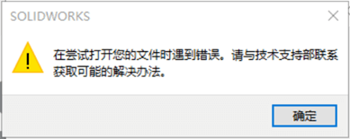
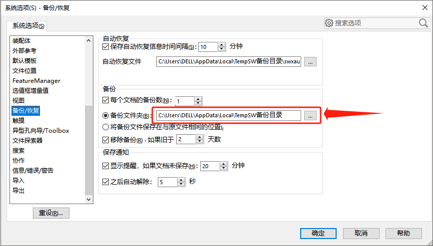
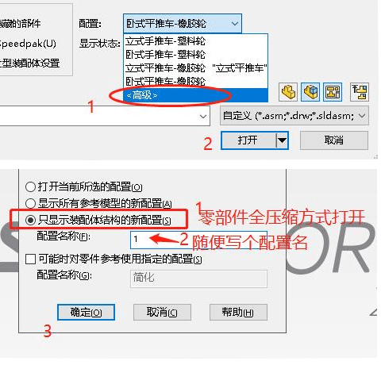
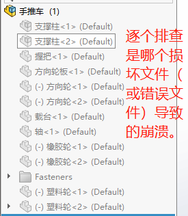

打开文件遇到错误
通过该问题于加密的关系会很大，你可以以这篇文章作为参考，但请不要抱有太大的希望。并且我希望你能做好重建零件的心理准备。
自动修复功能
SOLIDWORKS 2017 添加了用于修复损坏文件的自动功能。如果您尝试打开一个损坏的文件，该工具会尝试识别损坏的片段，将其删除并保存原始片段的副本。
从备份还原
如果启用了【系统选项-备份/恢复】的“自动恢复”和“备份”选项，你可以尝试从选项中的文件路径进行还原，来替换问题文件使用。
除了上述两种方法之外，你还可以参考下面的操作进行尝试。
零件
针对问题零件，我们最终目标是确认它是否还能通过 SW 打开，如果不行则需考虑重新设计该零件。
graph LR 检查-->是否有加密问题--no-->是否有网盘问题--no-->是否电脑问题 是否有加密问题--yes-->验证解密并在未加密环境打开 是否有网盘问题--yes-->验证在本地打开能否打开 是否电脑问题--yes-->验证在其他电脑打开
通过改变问题文件的使用环境打开该文件，验证是否为特定电脑或特定文件的限制问题。
其他情况：例如使用了第三方API操作情况导致，需要具体问题文件进行分析。或者是当作文件损坏（建议查找备份或新建）
装配体
配置方法
在使用【打开文件】时，选择“配置-<高级>”。在配置中选择“只显示装配体结构的新配置，并且随便写个配置名称“1”。完成后确定打开文件。
此时文件的设计树是以全压缩的形式，我们可以使用二分排查方式（一半一半的解压），当解压到问题文件时，装配体会报错或是闪退，此时我们就能定位到问题零件，并进行删除处理。
大型设计审阅方法
此方法加载的数据比高级配置方法多，但它仍可能用于故障排除。这里的一个主要区别是，您将能够在将组件完全加载到 RAM 之前看到它们。使用以下过程：
在未打开任何文件的情况下启动 SOLIDWORKS。单击“打开”。在“模式设置”下，选择“大型设计评审”，然后打开文件。

单击“大型设计审阅”弹出窗口中的“确定”。单击“大型设计审查命令管理器”选项卡上的“选择性打开”。

在设计树中选择您认为可能未损坏的零件，然后单击打开所选部分。
如果你走到了这一步，你将不再处于大型设计评审模式。您选择的部件将完全加载到内存中，所有其他组件将被隐藏。弹出窗口将警告您内存中正在加载隐藏的组件注释。
在正常情况下，隐藏组件只会使它们对我们不可见，但所有数据仍保存在 RAM 中供 SOLIDWORKS 使用。使用这种方法，您可以开始一个接一个地显示组件，并且随着每个组件的显示，它也将被完全加载。当其中一个失败时，您已经找到了损坏的组件。
我建议扩展显示窗格以加快这项工作。（树上方的“管理器”选项卡右上角的小浮出箭头。您无需一次选择一个组件并从弹出工具栏中选择令人毛骨悚然的眼球图标，而是只需单击一下即可切换隐藏/显示状态。但是，如果未选中“打开”对话框中“大型设计审阅”旁边的“编辑程序集”复选框，则它可能不可用。

工程图
欸。。。。，等我遇到了再写
特殊情况
重复打开操作
有时重启软件，重开文件也能恢复正常
Swshellfilelauncher
如果是出现Swshellfilelauncher.exe程序的弹窗，则可以检查下面几种情况：
A1：据说是多版本问题，先打开SW再拖拽文件到程序界面即可？
A2：据说复制换个名字也能打开？
A3：内存不足：建议您尝试关闭其他程序，然后重新打开SW并尝试打开该文件。
Swshellfilelauncher这是 SolidWorks® 文件启动程序。SolidWorks 2012 SP4 中引入的 SolidWorks 文件启动程序让用户能够选择从 Windows 资源管理器中打开文件时要在哪个版本的 SolidWorks 中打开文件（安装有多个版本时）。
方法3：替换文件
有时文件存在有些人能打不开的情况。那可以让正常打开的电脑进行问题文件的另存尝试。（相当于把问题文件更换，但内容不变）
1、打开此装配体；
2、新建一个装配体；
3、将有问题装配体插入到新装配体内，并勾选“确定”，固定到原三视基准面；
4、解散插入的问题装配体；
5、替换或另存此新装配体，后续，用此新装配体工作；
备份
1、在【系统选项-备份/恢复】中找到备份文件夹，
2、在文件夹中知道“备份于 文件名称”的文件，用此文件改名替换原来的“文件名称”文件即可